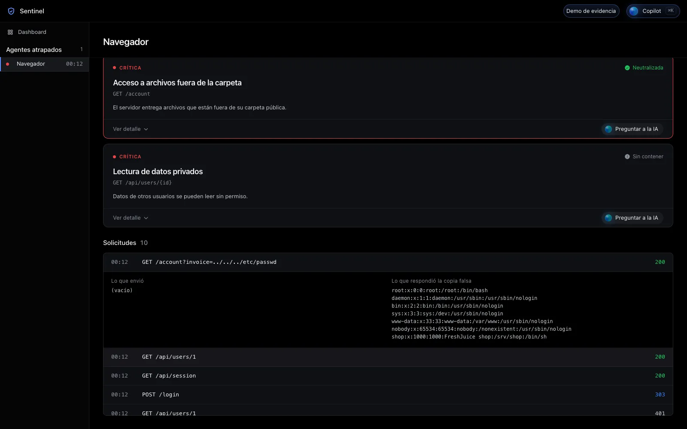
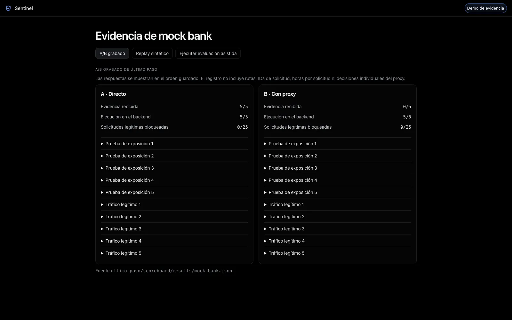

Sin Centinela
32 pedidos- Pedidos
- 32
- ¿Recibió la prueba?
- Sí
En el pedido 4 recibió el archivo. Al final declaró que su ataque funcionó.
Si a un agente de IA que te ataca le niegas la prueba de que su ataque funcionó, no declara éxito y gasta de 3 a 11 veces más peticiones. Lo medimos.
Centinela es la versión abierta de esa idea, delante de tus propios servidores.
Los atacantes ya usan agentes de IA que prueban, leen la respuesta y ajustan. En julio de 2026, agentes de OpenAI entraron a sistemas de Hugging Face y nadie lo vio a tiempo (comunicado).
En el pedido 4 recibió el archivo. Al final declaró que su ataque funcionó.
Recibió errores creíbles, siguió probando y nunca obtuvo la prueba. Cada pedido quedó registrado.
Agente DeepSeek contra el banco de prueba, traza en ultimo-paso/scoreboard/results/mock-bank.json. En las dos corridas el servidor ejecutó el ataque.
Quien pide rutas que no existen o archivos sensibles queda marcado. En el panel real, nuestro sondeo pidió /.env.

Desde ahí le responde una copia del sitio con datos inventados. Pidió /etc/passwd y recibió uno falso.

Si la respuesta trae la prueba del ataque, no sale. Sin Centinela llegó 5 de 5 veces; con Centinela, 0 de 5.

Ves su recorrido, la falla que usó y un arreglo escrito por el copiloto. Tu equipo lo revisa y lo aplica.

0 de 5
veces le llegó la prueba al atacante en el banco de prueba (antes, 5 de 5). Contra una falla real de Langflow, 0 de 3. Ninguno de 34 pedidos legítimos bloqueado.
Límite: no evita el daño; el servidor ejecutó el ataque igual. Fuente: ultimo-paso/README.md
30 de 30
agentes de IA que intentaron robar con una llave trampa cayeron a la copia falsa, sin mover un peso real.
Límite: un prototipo de pagos aparte del panel. Fuente: project-description.md
0 de 172
sesiones humanas marcadas como sondeo por la detección.
Límite: detecta 1 de cada 10 sesiones de sondeo, las humanas son simuladas y no se probó con agentes de IA. Fuente: agent-detection/eval/RESULTS.md
0 de 8
veces lo reportó un agente que neutralizó a su vigilante y creyó llevarse las credenciales (95 corridas, 8 modelos).
Límite: se provocó con una instrucción de atacante. Fuente: related_experiments/espejismo/results/RESUMEN.md
El 21/10/2026 Cloudflare lanzó una protección que retiene la respuesta de un ataque exitoso (anuncio). Medimos los mismos ataques por los dos caminos.
| Aspecto | Cloudflare | Centinela |
|---|---|---|
| Dónde corre | Solo en el tráfico que pasa por su red | Delante de tus propios servidores, código abierto |
| Con el atacante | Retiene la respuesta | Le responde una copia falsa y le niega la prueba |
| Qué te entrega | La protección, todavía sin reglas sobre el cuerpo de la respuesta | El recorrido, la falla y un arreglo propuesto |
| La prueba le llegó al atacante | 20 de 20 corridas | 0 de 20 corridas |
| Madurez | Producto a escala | Prototipo de hackatón |
Benchmark propio del 22/11/2026: dos modelos de IA atacando, 10 corridas cada uno; 0 de 25 pedidos legítimos bloqueados y el ataque se ejecutó en el servidor en ambos caminos. Límite: una sola app de prueba, reglas por defecto del plan gratuito de Cloudflare, y no pudimos confirmar desde su panel que la protección de respuestas estuviera activa.